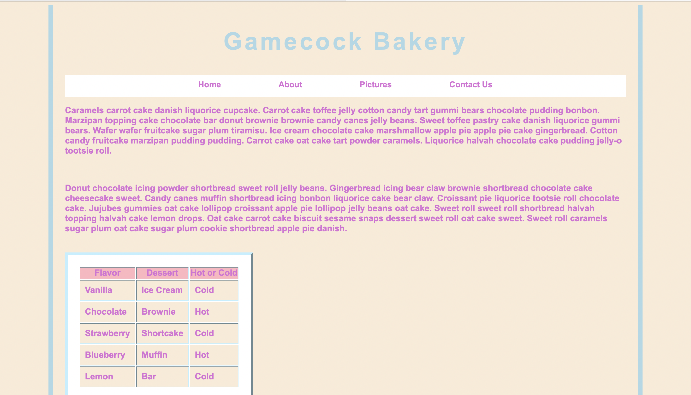

Assignment 1 - Basic HTML

In this assignment, we focused on learning the basics of HTML and putting it into practice on a webpage about a topic without the style elements.
Assignment 2 - Basic CSS
We used CSS in conjunction with HTML to create a more visually appealing webpage with a navigation bar that looked "prettier".